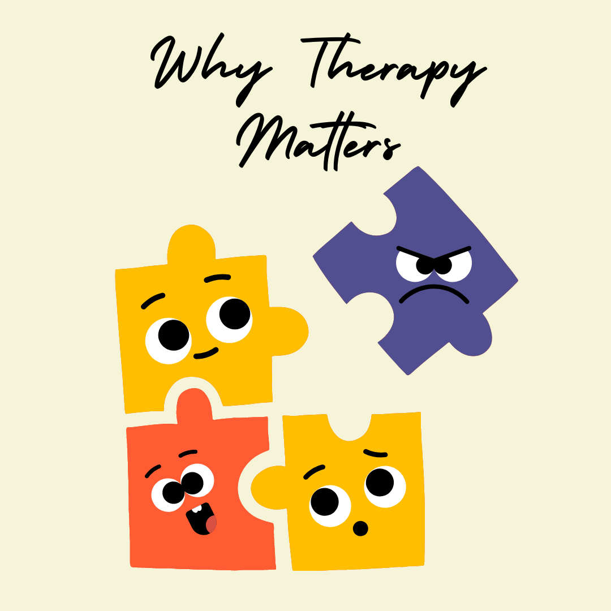

Mental health is a crucial aspect of overall well-being, yet it often gets overshadowed by misconceptions and stigma. The importance of mental health cannot be overstated, as it affects how we think, feel, and act in our daily lives. Breaking the stigma surrounding mental health is essential for creating a society where everyone feels comfortable seeking help and support.
Stigma around mental health issues creates barriers that prevent individuals from seeking the help they need. This stigma can manifest in various ways:
Social Stigma:
Negative attitudes and beliefs held by society can lead to discrimination and exclusion of individuals with mental health issues.
Self-Stigma:
Internalized negative beliefs can lead to feelings of shame and self-doubt, making individuals less likely to seek help.
Structural Stigma:
Institutional policies and practices that discriminate against people with mental health issues can limit access to care and resources.
Stigma can lead to serious consequences, including untreated mental health conditions, increased feelings of isolation, and a higher risk of suicide. It's crucial to address and challenge these stigmas to create a more supportive environment for those affected.
Common Misconceptions:
Several myths and misconceptions contribute to the stigma surrounding mental health:
Myth 1: Mental health issues are a sign of weakness.
Reality: Mental health conditions are medical issues, not a reflection of personal strength or weakness. They require the same attention and care as physical health conditions..
Myth 2: Therapy is only for people with severe mental illnesses.
Reality: Therapy can benefit anyone, regardless of the severity of their mental health concerns. It's a valuable tool for personal growth and coping with everyday challenges.
 Why Therapy Matters ?Breaking the stigma surrounding mental health is vital for creating a society where everyone feels safe and supported in seeking help. By challenging misconceptions and promoting understanding, we can make significant strides towards improving mental health for all. At InnerWhispers, we are committed to providing resources and support for those in need. Share your stories, educate others, and join us in the fight to end mental health stigma.
Presented By InnerWhispers